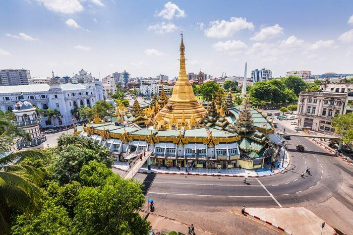
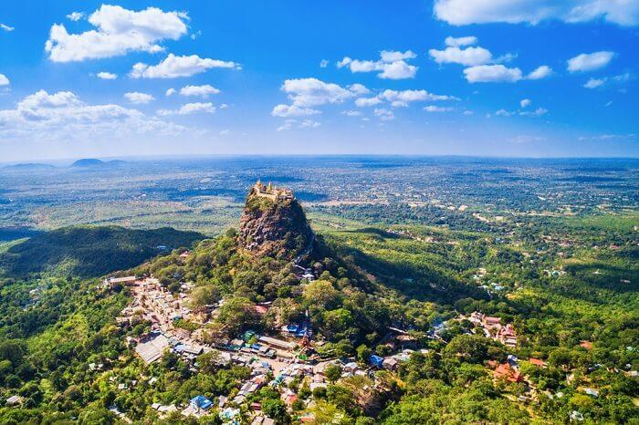
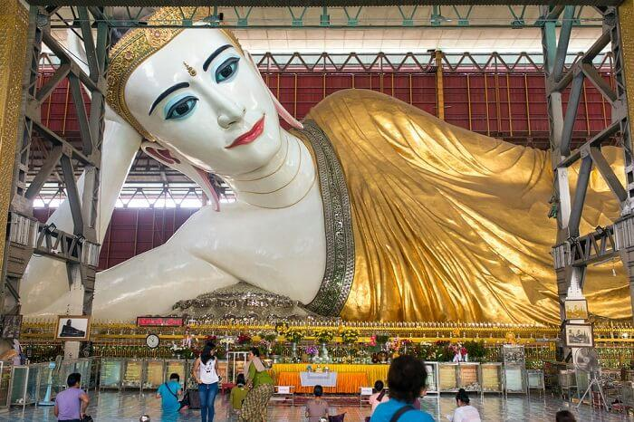

Place to visit
Sule Pagoda: Place For Meditation

Downtown Yangon is the home of the Sule Pagoda, a place of peace and meditation in the middle of the busy city. It’s believed to be more than 2,000 years old. It figures high on the list of Myanmar destinations especially among devotees because it houses a hair relic of Buddha.
The Sule Pagoda is often overlooked by tourists but it should figure in your Myanmar travels because it’s one of the only points of interest in this part of Yangon.
Mount Popa: Paradise For Hikers

If you’re in Mandalay, make it a point to visit Mount Popa. It’s one of the best Myanmar points of interest especially if you love to hike. The extinct volcano is not just magnificent to look at in itself but it’s topped by the Popa Taungkalat Monastery that’s perched on an outcrop. 777 steps will take you all the way to the top and reward you with panoramic views of the plains.
Chauk-Htat-Gyi Buddha Temple: Pay A Visit

Myanmar is known for its Buddhist temples and the Chauk-htat-gyi Buddha Temple is one of them. It houses a huge 65-meter reclining Buddha. This is one of the best places to visit in Myanmar especially if you’re on a tour of the country’s temples. Even if you’ve seen many reclining Buddhas, the relaxed pose and peaceful expression of this image are extremely calming.